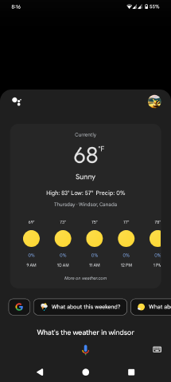
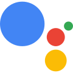
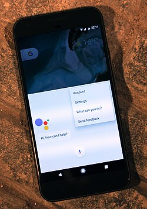

Google Assistant
Source: https://en.wikipedia.org/wiki/Google_Assistant
Category: products_cloud_and_ai
Depth: 1
Summary
Google Assistant is an outgoing virtual assistant software application developed by Google that is primarily available on home automation and mobile devices. Based on artificial intelligence, Google Assistant can engage in two-way conversations, unlike the company's previous virtual assistant, Google Now.
Images



Full Article
AI-powered digital assistant from Google
Google Assistant is an outgoing virtual assistant software application developed by Google that is primarily available on home automation and mobile devices. Based on artificial intelligence, Google Assistant can engage in two-way conversations, unlike the company's previous virtual assistant, Google Now.
Google Assistant debuted in 2016 as part of Google's messaging app Allo, and its voice-activated speaker Google Nest. After a period of exclusivity on the Google Pixel smartphones, it was deployed on other Android devices starting in February 2017, including third-party smartphones and Android Wear (now Wear OS), and was released as a standalone app on the iOS operating system in May 2017. Alongside the announcement of a software development kit in April 2017, Assistant has been further extended to support a large variety of devices, including cars and third-party smart home appliances. The functionality of Assistant can also be enhanced by third-party developers. At CES 2018, the first Assistant-powered smart displays (smart speakers with video screens) were announced, with the first one being released in July 2018. In 2020, Google Assistant was already available on more than 1 billion devices.
Users primarily interact with Google Assistant through natural voice, though keyboard input is also supported. Assistant is able to answer questions, schedule events and alarms, adjust hardware settings on the user's device, show information from the user's Google account, play games, and more. Google has also announced that Assistant will be able to identify objects and gather visual information through the device's camera, and support purchasing products as well as sending money. Google Assistant is available in more than 90 countries and over 30 languages, and is used by more than 500 million users monthly.
In October 2023, a mobile version of the Gemini chatbot, originally titled Assistant with Bard and simply just Bard, was unveiled during the Pixel 8 event. It is set to replace Assistant as the main assistant on Android devices, although the original Assistant will remain optional. The chatbot was released on February 8, 2024, in the United States.
On March 14, 2025, it was announced that Assistant would stop working on Android devices using Android 9 and higher, iOS and other devices such as the Google Nest, being mostly replaced by Gemini. Assistant would remain for low-range phones or phones running Android 8.1 "Oreo" and lower.
History
Google Assistant was unveiled during Google's developer conference on May 18, 2016, as part of the unveiling of the Google Nest smart speaker and new messaging app Allo; Google CEO Sundar Pichai explained that the Assistant was designed to be a conversational and two-way experience, and "an ambient experience that extends across devices". Later that month, Google assigned Google Doodle leader Ryan Germick and hired former Pixar animator Emma Coats to develop "a little more of a personality".
Platform expansion
For system-level integration outside of the Allo app and Google Nest, the Google Assistant was initially exclusive to the Google Pixel smartphones. In February 2017, Google announced that it had begun to enable access to the Assistant on Android smartphones running Android 6.0.1 or 7.0, beginning in select English-speaking markets. Android tablets did not receive the Assistant as part of this rollout. The Assistant is also integrated in Wear OS 2.0, and will be included in future versions of Android TV and Android Auto. In October 2017, the Google Pixelbook became the first laptop to include Google Assistant. Google Assistant later came to the Google Pixel Buds. In December 2017, Google announced that the Assistant would be released for phones running Android 5.0 through an update to Google Play Services, as well as tablets running 6.0 Marshmallow and 7.0 Nougat. In February 2019, Google reportedly began testing ads in Google Assistant results.
On May 15, 2017, Android Police reported that the Google Assistant would be coming to the iOS operating system as a separate app. The information was confirmed two days later at Google's developer conference.
Smart displays
In January 2018 at the Consumer Electronics Show, the first Assistant-powered "smart displays" were released. Smart displays were shown at the event from Lenovo, Sony, JBL and LG. These devices have support for Google Duo video calls, YouTube videos, GMaps directions, a GCalendar agenda, viewing of smart camera footage, in addition to services which work with Google Home devices.
These devices are based on Android Things and Google-developed software. Google unveiled its own smart display, Google Nest Hub in October 2018, and later Google Nest Hub Max, which utilizes a different system platform.
Developer support
In December 2016, Google launched "Actions on Google", a developer platform for the Google Assistant. Actions on Google allows 3rd party developers to build apps for Google Assistant. In March 2017, Google added new tools for developing on Actions on Google to support the creation of games for Google Assistant. Originally limited to the Google Nest smart speaker, Actions on Google was made available to Android and iOS devices in May 2017, at which time Google also introduced an app directory or application directory for overview of compatible products and services. To incentivize developers to build Actions, Google announced a competition, in which first place won tickets to Google's 2018 developer conference, $10,000, and a walk-through of Google's campus, while second place and third place received $7,500 and $5,000, respectively, and a Google Home.
In April 2017, a software development kit (SDK) was released, allowing third-party developers to build their own hardware that can run the Google Assistant. It has been integrated into Raspberry Pi, cars from Audi and Volvo, and Home automation appliances, including fridges, washers, and ovens, from companies including iRobot, LG, General Electric, and D-Link. Google updated the SDK in December 2017 to add several features that only the Google Home smart speakers and Google Assistant smartphone apps had previously supported.
The features include:
- Third-party device makers can incorporate their own "Actions on Google" commands for their respective products
- Text-based interactions and many languages
- Users can set a precise geographic location for the device to enable improved location-specific queries.
On May 2, 2018, Google announced a new program that focuses on investing in the future of Google Assistant through early-stage startups. Their focus was to build an environment where developers could build richer experiences for their users. This includes startups that broaden Assistant's features, are building new hardware devices, or simply differentiating in different industries.
Voices
Google Assistant launched using the voice of Kiki Baessell for the American female voice, the same actress for the Google Voice voicemail system since 2010.
On October 11, 2019, Google announced that Issa Rae had been added to Google Assistant as an optional voice, which could be enabled by the user by saying "Okay, Google, talk like Issa". Although, as of April 2022, Google Assistant response with "Sorry, that voice isn't available anymore, but you can try out another by asking me to change voices." if the command is given.[citation needed]
Interaction
Google Assistant, in the nature and manner of Google Now, can search the Internet, schedule events and alarms, adjust hardware settings on the user's device, and show information from the user's Google account. Unlike Google Now, however, the Assistant can engage in a two-way conversation, using Google's natural language processing algorithm. Search results are presented in a card format that users can tap to open the page. In February 2017, Google announced that users of Google Home would be able to shop entirely by voice for products through its Google Express shopping service, with products available from Whole Foods Market, Costco, Walgreens, PetSmart, and Bed Bath & Beyond at launch, and other retailers added in the following months as new partnerships were formed. Google Assistant can maintain a shopping list; this was previously done within the notetaking service GKeep, but the feature was moved to Google Express and the Google Home app in April 2017, resulting in a severe loss of functionality.
In May 2017, Google announced that the Assistant would support a keyboard for typed input and visual responses, support identifying objects and gather visual information through the device's camera, and support purchasing products and sending money. Through the use of the keyboard, users can see a history of queries made to the Google Assistant, and edit or delete previous inputs. The Assistant warns against deleting, however, due to its use of previous inputs to generate better answers in the future. In November 2017, it became possible to identify songs currently playing by asking the Assistant.
The Google Assistant allows users to activate and modify vocal shortcut commands in order to perform actions on their device (both Android and iPad/iPhone) or configure it as a hub for home automation.
This feature of the speech recognition is available in English, among other languages. In July 2018, the Google Home version of Assistant gained support for multiple actions triggered by a single vocal shortcut command.
At the annual I/O developers conference on May 8, 2018, Google's SEO announced the addition of six new voice options for the Google Assistant, one of which being John Legend's. This was made possible by WaveNet, a voice synthesizer developed by DeepMind, which significantly reduced the amount of audio samples that a voice actor was required to produce for creating a voice model. However, John Legend's Google Assistant cameo voice was discontinued on March 23, 2020.
In August 2018, Google added bilingual capabilities to the Google Assistant for existing supported languages on devices. Recent reports say that it may support multilingual support by setting a third default language on Android Phone.
Speech-to-Text can recognize commas, question marks, and periods in transcription requests.
In April 2019, the most popular audio games in the Assistant, Crystal Ball, and Lucky Trivia, have had the biggest voice changes in the application's history. The voice in the assistant has been able to add expression to the games. For instance, in the Crystal Ball game, the voice would speak slowly and softly during the intro and before the answer is revealed to make the game more exciting, and in the Lucky Trivia game, the voice would become excitable like a game show host. In the British accent voice of Crystal Ball, the voice would say the word 'probably' in a downward slide like she's not too sure. The games used the text-to-speech voice which makes the voice more robotic. In May 2019 however, it turned out to be a bug in the speech API that caused the games to lose the studio-quality voices. These audio games were fixed in May 2019.
Interpreter Mode
On December 12, 2019, Google debuted an interpreter mode in Google Assistant smartphone apps for Android and iOS. It provides translation of conversations in real-time and was previously only available on Google Home smart speakers and displays. Google Assistant won the 2020 Webby Award for Best User Experience in the category: Apps, Mobile & Voice.
On March 5, 2020, Google introduced a feature on Google Assistant that read webpages aloud in 42 languages.
On October 15, 2020, Google announced a new 'hum to search' function to find a song by simply humming, whistling, or singing the song.
Google Duplex
This section is about Duplex for Google Assistant. For the number, see googolplex.
In May 2018, Google revealed Duplex, an extension of the Google Assistant that allows it to carry out natural conversations by mimicking human voice, in a manner not dissimilar to robocalling. The assistant can autonomously complete tasks such as calling a hair salon to book an appointment, scheduling a restaurant reservation, or calling businesses to verify holiday store hours. While Duplex can complete most of its tasks fully autonomously, it is able to recognize situations that it is unable to complete and can signal a human operator to finish the task. Duplex was created to speak in a more natural voice and language by incorporating speech disfluencies such as filler words like "hmm" and "uh" and using common phrases such as "mhm" and "gotcha", along with more human-like intonation and response latency. Duplex is currently in development and had a limited release in late 2018 for Google Pixel users. During the limited release, Pixel phone users in Atlanta, New York, Phoenix, and San Francisco were only able to use Duplex to make restaurant reservations. As of October 2020, Google has expanded Duplex to businesses in eight countries.
Criticism
After the announcement, concerns were made over the ethical and societal questions that artificial intelligence technology such as Duplex raises. For instance, human operators may not notice that they are speaking with a digital robot when conversing with Duplex, which some critics view as unethical or deceitful. Concerns over privacy were also identified, as conversations with Duplex are recorded in order for the virtual assistant to analyze and respond. Privacy advocates have also raised concerns around how the millions of vocal samples gathered from consumers are fed back into the algorithms of virtual assistants, making these forms of AI smarter with each use. Though these features individualize the user experience, critics are unsure about the long term implications of giving "the company unprecedented access to human patterns and preferences that are crucial to the next phase of artificial intelligence".
While transparency was referred to as a key part to the experience when the technology was revealed, Google later further clarified in a statement saying, "We are designing this feature with disclosure built-in, and we'll make sure the system is appropriately identified." Google further added that, in certain jurisdictions, the assistant would inform those on the other end of the phone that the call is being recorded.
Reception
PC World's Mark Hachman gave a favorable review of the Google Assistant, saying that it was a "step up on Cortana and Siri." Digital Trends called it "smarter than Google Now ever was".
Criticism
In July 2019, Belgian public broadcaster VRT NWS published an article revealing that third-party contractors paid to transcribe audio clips collected by Google Assistant listened to sensitive information about users. Sensitive data collected from Google Home devices and Android phones included names, addresses, and other private conversations after mistaken hot word triggering, such as business calls or bedroom conversations. From more than 1,000 recordings analyzed, 153 were recorded without the "OK Google" command. Google officially acknowledged that 0.2% of recordings are being listened to by language experts to improve Google's services. On August 1, 2019, Germany's Hamburg Commissioner for Data Protection and Freedom of Information initiated an administrative procedure to prohibit Google from carrying out corresponding evaluations by employees or third parties for the period of three months to provisionally protect the rights of privacy of data subjects for the time being, citing GDPR. A Google spokesperson stated that Google paused "language reviews" in all European countries while it investigated recent media leaks.
See also
- Amazon Alexa
- Bixby
- Cortana
- Google Gemini
- Home automation (Smart Home)
- Internet of things (IoT)
- Mycroft (software)
- Siri
- Smart devices
- Speech recognition
- Voice user interface
References
External links
- Official website
- Google Assistant supported languages
- Google Assistant for Developers
- Google Assistant on Google Play
- Google Assistant on the App Store
| - v - t - e Google AI | |
|---|---|
| - Google - Google Brain - Google DeepMind | |
| Computer programs | |
| Machine learning | |
| Generative AI | |
| See also | - "Attention Is All You Need" - Future of Go Summit - Generative pre-trained transformer - Google Labs - Google Pixel - Google Workspace - Robot Constitution |
| - Category - Commons |
| - v - t - e Google | |
|---|---|
| a subsidiary of Alphabet | |
| Company | |
| Development | |
| Software | |
| Hardware | |
| - v - t - e Litigation | |
| Related | |
| Italics denote discontinued products. - Category - Outline |
| - v - t - e Ambient intelligence | |
|---|---|
| Concepts | - Ambient IoT - Context awareness - Device ecology - Spatial computing - Internet of things - Object hyperlinking - Profiling - Spime - Ubiquitous computing - Web of Things - Wireless sensor networks |
| Technologies | - 6LoWPAN - ANT+ - DASH7 - IEEE 802.15.4 - Internet 0 - Machine to machine - Radio-frequency identification - Smartdust - XBee |
| Platforms | - Arduino - Contiki - Gadgeteer - ioBridge - Netduino - Raspberry Pi - TinyOS - Wiring - Xively - NodeMCU |
| Applications | - Ambient device - CeNSE - Connected car - Home automation - HomeOS - Internet refrigerator - Nabaztag - Smart city - Smart TV - Smarter Planet |
| Pioneers | - Kevin Ashton - Gaetano Borriello - Adam Dunkels - Stefano Marzano - Don Norman - Roel Pieper - Josef Preishuber-Pflügl - John Seely Brown - Bruce Sterling - Mark Weiser |
| Other | - Ambient Devices - AmbieSense - Ebbits project - IPSO Alliance |
| - v - t - e Virtual assistants | |
|---|---|
| Active | - AliGenie - Alexa - Alice - Bixby - Viv - Braina - Celia - Clova - Google Assistant - Huawei HiCar - Maluuba - Siri - Voice Mate - Watson - WolframAlpha - Xiaoice |
| Discontinued | - BlackBerry Assistant - Cortana - Google Now - M - Microsoft Agent - Microsoft Bob - Microsoft Voice Command - Ms. Dewey - Mya - Mycroft - Office Assistant (Clippy) - S Voice - Speaktoit Assistant - Tafiti - Vlingo |